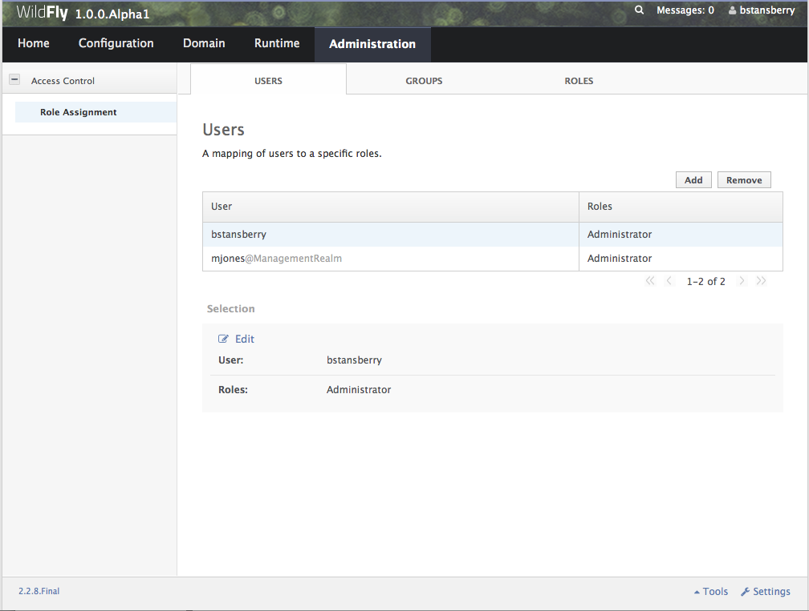
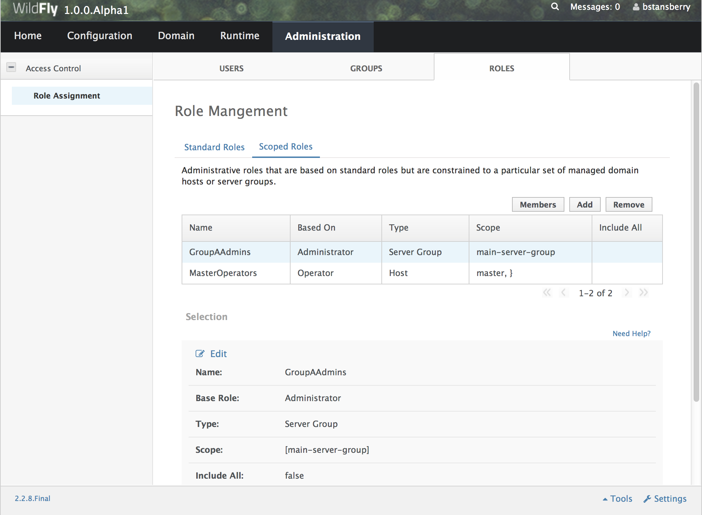
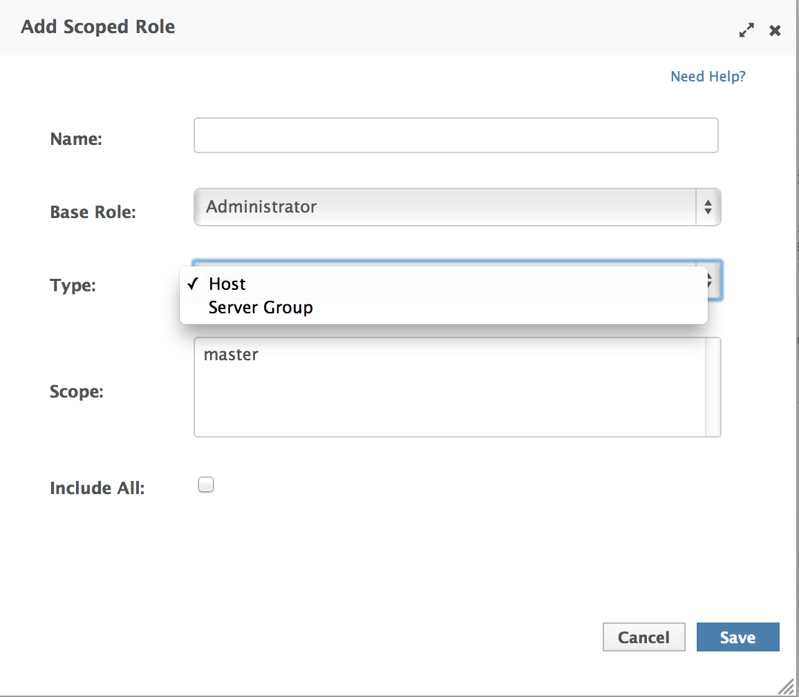

<management>
. . .
<access-control provider="simple">
<role-mapping>
<role name="SuperUser">
<include>
<user name="$local"/>
</include>
</role>
</role-mapping>
</access-control>
</management>
WildFly introduces a Role Based Access Control scheme that allows different administrative users to have different sets of permissions to read and update parts of the management tree. This replaces the simple permission scheme used in JBoss AS 7, where anyone who could successfully authenticate to the management security realm would have all permissions.
Access Control Providers
WildFly ships with two access control "providers", the "simple" provider, and the "rbac" provider. The "simple" provider is the default, and provides a permission scheme equivalent to the JBoss AS 7 behavior where any authenticated administrator has all permissions. The "rbac" provider gives the finer grained permission scheme that is the focus of this section.
The access control configuration is included in the management section of a standalone server's standalone.xml, or in a new "management" section in a managed domain's domain.xml. The access control policy is centrally configured in a managed domain.
As you can see, the provider is set to "simple" by default. With the "simple" provider, the nested "role-mapping" section is not actually relevant. It's there to help ensure that if the provider attribute is switched to "rbac" there will be at least one user mapped to a role that can continue to administer the system. This default mapping assigns the "$local" user name to the RBAC role that provides all permissions, the "SuperUser" role. The "$local" user name is the name an administrator will be assigned if he or she uses the CLI on the same system as the WildFly instance and the "local" authentication scheme is enabled.
RBAC provider overview
The access control scheme implemented by the "rbac" provider is based on seven standard roles. A role is a named set of permissions to perform one of the actions: addressing (i.e. looking up) a management resource, reading it, or modifying it. The different roles have constraints applied to their permissions that are used to determine whether the permission is granted.
RBAC roles
The seven standard roles are divided into two broad categories, based on whether the role can deal with items that are considered to be "security sensitive". Resources, attributes and operations that may affect administrative security (e.g. security realm resources and attributes that contain passwords) are "security sensitive".
Four roles are not given permissions for "security sensitive" items:
-
Monitor – a read-only role. Cannot modify any resource.
-
Operator – Monitor permissions, plus can modify runtime state, but cannot modify anything that ends up in the persistent configuration. Could, for example, restart a server.
-
Maintainer – Operator permissions, plus can modify the persistent configuration.
-
Deployer – like a Maintainer, but with permission to modify persistent configuration constrained to resources that are considered to be "application resources". A deployment is an application resource. The messaging server is not. Items like datasources and JMS destinations are not considered to be application resources by default, but this is configurable.
Three roles are granted permissions for security sensitive items:
-
SuperUser – has all permissions. Equivalent to a JBoss AS 7 administrator.
-
Administrator – has all permissions except cannot read or write resources related to the administrative audit logging system.
-
Auditor – can read anything. Can only modify the resources related to the administrative audit logging system.
The Auditor and Administrator roles are meant for organizations that want a separation of responsibilities between those who audit normal administrative actions and those who perform them, with those who perform most actions (Administrator role) not being able to read or alter the auditing configuration.
Access control constraints
The following factors are used to determine whether a given role is granted a permission:
-
What the requested action is (address, read, write)
-
Whether the resource, attribute or operation affects the persistent configuration
-
Whether the resource, attribute or operation is related to the administrative audit logging function
-
Whether the resource, attribute or operation is configured as security sensitive
-
Whether an attribute or operation parameter value has a security vault expression
-
Whether a resource is considered to be associated with applications, as opposed to being part of a general container configuration
The first three of these factors are non-configurable; the latter three allow some customization. See "Configuring constraints" for details.
Addressing a resource
As mentioned above, permissions are granted to perform one of three actions, addressing a resource, reading it, and modifying. The latter two actions are fairly self-explanatory. But what is meant by "addressing" a resource?
"Addressing" a resource refers to taking an action that allows the user to determine whether a resource at a given address actually exists. For example, the "read-children-names" operation lets a user determine valid addresses. Trying to read a resource and getting a "Permission denied" error also gives the user a clue that there actually is a resource at the requested address.
Some resources may include sensitive information as part of their address. For example, security realm resources include the realm name as the last element in the address. That realm name is potentially security sensitive; for example it is part of the data used when creating a hash of a user password. Because some addresses may contain security sensitive data, a user needs permission to even "address" a resource. If a user attempts to address a resource and does not have permission, they will not receive a "permission denied" type error. Rather, the system will respond as if the resource does not even exist, e.g. excluding the resource from the result of the "read-children-names" operation or responding with a "No such resource" error instead of "Permission denied" if the user is attempting to read or write the resource.
Another term for "addressing" a resource is "looking up" the resource.
Switching to the "rbac" provider
Use the CLI to switch the access-control provider.
Before changing the provider to "rbac", be sure your configuration has a user who will be mapped to one of the RBAC roles, preferably with at least one in the Administrator or SuperUser role. Otherwise your installation will not be manageable except by shutting it down and editing the xml configuration. If you have started with one of the standard xml configurations shipped with WildFly, the "$local" user will be mapped to the "SuperUser" role and the "local" authentication scheme will be enabled. This will allow a user running the CLI on the same system as the WildFly process to have full administrative permissions. Remote CLI users and web-based admin console users will have no permissions.
We recommend mapping at least one user besides "$local" before switching the provider to "rbac". You can do all of the configuration associated with the "rbac" provider even when the provider is set to "simple"
The management resources related to access control are located in the core-service=management/access=authorization portion of the management resource tree. Update the provider attribute to change between the "simple" and "rbac" providers. Any update requires a reload to take effect.
[standalone@localhost:9990 /] cd core-service=management/access=authorization
[standalone@localhost:9990 access=authorization] :write-attribute(name=provider,value=rbac)
{
"outcome" => "success",
"response-headers" => {
"operation-requires-reload" => true,
"process-state" => "reload-required"
}
}
[standalone@localhost:9990 access=authorization] reload
In a managed domain, the access control configuration is part of the domain wide configuration, so the resource address is the same as above:
[domain@localhost:9990 /] cd core-service=management/access=authorization
[domain@localhost:9990 access=authorization] :write-attribute(name=provider,value=rbac)
{
"outcome" => "success",
"response-headers" => {
"operation-requires-reload" => true,
"process-state" => "reload-required"
},
"result" => undefined,
"server-groups" => {"main-server-group" => {"host" => {"master" => {
"server-one" => {"response" => {
"outcome" => "success",
"response-headers" => {
"operation-requires-reload" => true,
"process-state" => "reload-required"
}
}},
"server-two" => {"response" => {
"outcome" => "success",
"response-headers" => {
"operation-requires-reload" => true,
"process-state" => "reload-required"
}
}}
}}}}
}
[domain@localhost:9990 access=authorization] reload --host=master
As with a standalone server, a reload is required for the change to take effect. In this case, all hosts and servers in the domain will need to be restarted, so be sure to plan well before making this change.
Mapping users and groups to roles
Once the "rbac" access control provider is enabled, only users who are mapped to one of the available roles will have any administrative permissions at all. So, to make RBAC useful, a mapping between individual users or groups of users and the available roles must be performed.
Mapping individual users
The easiest way to map individual users to roles is to use the web-based admin console.
Navigate to the "Administration" tab and the "Users" subtab. From there individual user mappings can be added, removed, or edited.

The CLI can also be used to map individuals users to roles.
First, if one does not exist, create the parent resource for all mappings for a role. Here we create the resource for the Administrator role.
[domain@localhost:9990 /] /core-service=management/access=authorization/role-mapping=Administrator:add
{
"outcome" => "success",
"result" => undefined,
"server-groups" => {"main-server-group" => {"host" => {"master" => {
"server-one" => {"response" => {"outcome" => "success"}},
"server-two" => {"response" => {"outcome" => "success"}}
}}}}
}
Once this is done, map a user to the role:
[domain@localhost:9990 /] /core-service=management/access=authorization/role-mapping=Administrator/include=user-jsmith:add(name=jsmith,type=USER)
{
"outcome" => "success",
"result" => undefined,
"server-groups" => {"main-server-group" => {"host" => {"master" => {
"server-one" => {"response" => {"outcome" => "success"}},
"server-two" => {"response" => {"outcome" => "success"}}
}}}}
}
Now if user jsmith authenticates to any security realm associated with the management interface they are using, he will be mapped to the Administrator role.
To restrict the mapping to a particular security realm, change the realm attribute to the realm name. This might be useful if different realms are associated with different management interfaces, and the goal is to limit a user to a particular interface.
[domain@localhost:9990 /] /core-service=management/access=authorization/role-mapping=Administrator/include=user-mjones:add(name=mjones,type=USER,realm=ManagementRealm)
{
"outcome" => "success",
"result" => undefined,
"server-groups" => {"main-server-group" => {"host" => {"master" => {
"server-one" => {"response" => {"outcome" => "success"}},
"server-two" => {"response" => {"outcome" => "success"}}
}}}}
}
User groups
A "group" is an arbitrary collection of users that may exist in the end user environment. They can be named whatever the end user organization wants and can contain whatever users the end user organization wants. Some of the authentication store types supported by WildFly security realms include the ability to access information about what groups a user is a member of and associate this information with the Subject produced when the user is authenticated. This is currently supported for the following authentication store types:
-
properties file (via the <realm_name>-groups.properties file)
-
LDAP (via directory-server-specific configuration)
Groups are convenient when it comes to associating a user with a role, since entire groups can be associated with a role in a single mapping.
Mapping groups to roles
The easiest way to map groups to roles is to use the web-based admin console.
Navigate to the "Administration" tab and the "Groups" subtab. From there group mappings can be added, removed, or edited.

The CLI can also be used to map groups to roles. The only difference to individual user mapping is the value of the type attribute should be GROUP instead of USER.
[domain@localhost:9990 /] /core-service=management/access=authorization/role-mapping=Administrator/include=group-SeniorAdmins:add(name=SeniorAdmins,type=GROUP)
{
"outcome" => "success",
"result" => undefined,
"server-groups" => {"main-server-group" => {"host" => {"master" => {
"server-one" => {"response" => {"outcome" => "success"}},
"server-two" => {"response" => {"outcome" => "success"}}
}}}}
}
As with individual user mappings, the mapping can be restricted to users authenticating via a particular security realm:
[domain@localhost:9990 /] /core-service=management/access=authorization/role-mapping=Administrator/include=group-PowerAdmins:add(name=PowerAdmins,type=GROUP,realm=ManagementRealm)
{
"outcome" => "success",
"result" => undefined,
"server-groups" => {"main-server-group" => {"host" => {"master" => {
"server-one" => {"response" => {"outcome" => "success"}},
"server-two" => {"response" => {"outcome" => "success"}}
}}}}
}
Including all authenticated users in a role
It's possible to specify that all authenticated users should be mapped to a particular role. This could be used, for example, to ensure that anyone who can authenticate can at least have Monitor privileges.
A user who can authenticate to the management security realm but who does not map to a role will not be able to perform any administrative functions, not even reads.
In the web based admin console, navigate to the "Administration" tab, "Roles" subtab, highlight the relevant role, click the "Edit" button and click on the "Include All" checkbox:

The same change can be made using the CLI:
[domain@localhost:9990 /] /core-service=management/access=authorization/role-mapping=Monitor:write-attribute(name=include-all,value=true)
{
"outcome" => "success",
"result" => undefined,
"server-groups" => {"main-server-group" => {"host" => {"master" => {
"server-one" => {"response" => {"outcome" => "success"}},
"server-two" => {"response" => {"outcome" => "success"}}
}}}}
}
Excluding users and groups
It is also possible to explicitly exclude certain users and groups from a role. Exclusions take precedence over inclusions, including cases where the include-all attribute is set to true for a role.
In the admin console, excludes are done in the same screens as includes. In the add dialog, simply change the "Type" pulldown to "Exclude".

In the CLI, excludes are identical to includes, except the resource address has exclude instead of include as the key for the last address element:
[domain@localhost:9990 /] /core-service=management/access=authorization/role-mapping=Monitor/exclude=group-Temps:add(name=Temps,type=GROUP)
{
"outcome" => "success",
"result" => undefined,
"server-groups" => {"main-server-group" => {"host" => {"master" => {
"server-one" => {"response" => {"outcome" => "success"}},
"server-two" => {"response" => {"outcome" => "success"}}
}}}}
}
Users who map to multiple roles
It is possible that a given user will be mapped to more than one role. When this occurs, by default the user will be granted the union of the permissions of the two roles. This behavior can be changed on a global basis to instead respond to the user request with an error if this situation is detected:
[standalone@localhost:9990 /] cd core-service=management/access=authorization
[standalone@localhost:9990 access=authorization] :write-attribute(name=permission-combination-policy,value=rejecting)
{"outcome" => "success"}
Note that no reload is required; the change takes immediate effect.
To restore the default behavior, set the value to "permissive":
[standalone@localhost:9990 /] cd core-service=management/access=authorization
[standalone@localhost:9990 access=authorization] :write-attribute(name=permission-combination-policy,value=permissive)
{"outcome" => "success"}
Adding custom roles in a managed domain
A managed domain may involve a variety of servers running different configurations and hosting different applications. In such an environment, it is likely that there will be different teams of administrators responsible for different parts of the domain. To allow organizations to grant permissions to only parts of a domain, WildFly's RBAC scheme allows for the creation of custom "scoped roles". Scoped roles are based on the seven standard roles, but with permissions limited to a portion of the domain – either to a set of server groups or to a set of hosts.
Server group scoped roles
The privileges for a server-group scoped role are constrained to resources associated with one or more server groups. Server groups are often associated with a particular application or set of applications; organizations that have separate teams responsible for different applications may find server-group scoped roles useful.
A server-group scoped role is equivalent to the default role upon which it is based, but with privileges constrained to target resources in the resource trees rooted in the server group resources. The server-group scoped role can be configured to include privileges for the following resources trees logically related to the server group:
-
Profile
-
Socket Binding Group
-
Deployment
-
Deployment override
-
Server group
-
Server config
-
Server
Resources in the profile, socket binding group, server config and server portions of the tree that are not logically related to a server group associated with the server-group scoped role will not be addressable by a user in that role. So, in a domain with server groups “a” and “b”, a user in a server-group scoped role that grants access to “a” will not be able to address /server-group=b. The system will treat that resource as non-existent for that user.
In addition to these privileges, users in a server-group scoped role will have non-sensitive read privileges (equivalent to the Monitor role) for resources other than those listed above.
The easiest way to create a server-group scoped role is to use the admin console. But you can also use the CLI to create a server-group scoped role.
[domain@localhost:9990 /] /core-service=management/access=authorization/server-group-scoped-role=MainGroupAdmins:add(base-role=Administrator,server-groups=[main-server-group])
{
"outcome" => "success",
"result" => undefined,
"server-groups" => {"main-server-group" => {"host" => {"master" => {
"server-one" => {"response" => {"outcome" => "success"}},
"server-two" => {"response" => {"outcome" => "success"}}
}}}}
}
Once the role is created, users or groups can be mapped to it the same as with the seven standard roles.
Host scoped roles
The privileges for a host-scoped role are constrained to resources associated with one or more hosts. A user with a host-scoped role cannot modify the domain wide configuration. Organizations may use host-scoped roles to give administrators relatively broad administrative rights for a host without granting such rights across the managed domain.
A host-scoped role is equivalent to the default role upon which it is based, but with privileges constrained to target resources in the resource trees rooted in the host resources for one or more specified hosts.
In addition to these privileges, users in a host-scoped role will have non-sensitive read privileges (equivalent to the Monitor role) for domain wide resources (i.e. those not in the /host=* section of the tree.)
Resources in the /host=* portion of the tree that are unrelated to the hosts specified for the Host Scoped Role will not be visible to users in that host-scoped role. So, in a domain with hosts “a” and “b”, a user in a host-scoped role that grants access to “a” will not be able to address /host=b. The system will treat that resource as non-existent for that user.
The easiest way to create a host-scoped role is to use the admin console. But you can also use the CLI to create a host scoped role.
[domain@localhost:9990 /] /core-service=management/access=authorization/host-scoped-role=MasterOperators:add(base-role=Operator,hosts=[master]}
{
"outcome" => "success",
"result" => undefined,
"server-groups" => {"main-server-group" => {"host" => {"master" => {
"server-one" => {"response" => {"outcome" => "success"}},
"server-two" => {"response" => {"outcome" => "success"}}
}}}}
}
Once the role is created, users or groups can be mapped to it the same as with the seven standard roles.
Using the admin console to create scoped roles
Both server-group and host scoped roles can be added, removed or edited via the admin console. Select "Scoped Roles" from the "Administration" tab, "Roles" subtab:

When adding a new scoped role, use the dialogue's "Type" pull down to choose between a host scoped role and a server-group scoped role. Then place the names of the relevant hosts or server groups in the "Scope" text are.

Configuring constraints
The following factors are used to determine whether a given role is granted a permission:
-
What the requested action is (address, read, write)
-
Whether the resource, attribute or operation affects the persistent configuration
-
Whether the resource, attribute or operation is related to the administrative audit logging function
-
Whether the resource, attribute or operation is configured as security sensitive
-
Whether an attribute or operation parameter value has a security vault expression
-
Whether a resource is considered to be associated with applications, as opposed to being part of a general container configuration
The first three of these factors are non-configurable; the latter three allow some customization.
Configuring sensitivity
"Sensitivity" constraints are about restricting access to security-sensitive data. Different organizations may have different opinions about what is security sensitive, so WildFly provides configuration options to allow users to tailor these constraints.
Sensitive resources, attributes and operations
The developers of the WildFly core and of any subsystem may annotate resources, attributes or operations with a "sensitivity classification". Classifications are either provided by the core and may be applicable anywhere in the management model, or they are scoped to a particular subsystem. For each classification, there will be a setting declaring whether by default the addressing, read and write actions are considered to be sensitive. If an action is sensitive, only users in the roles able to deal with sensitive data (Administrator, Auditor, SuperUser) will have permissions.
Using the CLI, administrators can see the settings for a classification. For example, there is a core classification called "socket-config" that is applied to elements throughout the model that relate to configuring sockets:
[domain@localhost:9990 /] cd core-service=management/access=authorization/constraint=sensitivity-classification/type=core/classification=socket-config [domain@localhost:9990 classification=socket-config] ls -l ATTRIBUTE VALUE TYPE configured-requires-addressable undefined BOOLEAN configured-requires-read undefined BOOLEAN configured-requires-write undefined BOOLEAN default-requires-addressable false BOOLEAN default-requires-read false BOOLEAN default-requires-write true BOOLEAN CHILD MIN-OCCURS MAX-OCCURS applies-to n/a n/a
The various default-requires-... attributes indicate whether a user must be in a role that allows security sensitive actions in order to perform the action. In the socket-config example above, default-requires-write is true, while the others are false. So, by default modifying a setting involving socket configuration is considered sensitive, while addressing those resources or doing reads is not sensitive.
The default-requires-... attributes are read-only. The configured-requires-... attributes however can be modified to override the default settings with ones appropriate for your organization. For example, if your organization doesn't regard modifying socket configuration settings to be security sensitive, you can change that setting:
[domain@localhost:9990 classification=socket-config] :write-attribute(name=configured-requires-write,value=false)
{
"outcome" => "success",
"result" => undefined,
"server-groups" => {"main-server-group" => {"host" => {"master" => {
"server-one" => {"response" => {"outcome" => "success"}},
"server-two" => {"response" => {"outcome" => "success"}}
}}}}
}
Administrators can also read the management model to see to which resources, attributes and operations a particular sensitivity classification applies:
[domain@localhost:9990 classification=socket-config] :read-children-resources(child-type=applies-to)
{
"outcome" => "success",
"result" => {
"/host=master" => {
"address" => "/host=master",
"attributes" => [],
"entire-resource" => false,
"operations" => ["resolve-internet-address"]
},
"/host=master/core-service=host-environment" => {
"address" => "/host=master/core-service=host-environment",
"attributes" => [
"host-controller-port",
"host-controller-address",
"process-controller-port",
"process-controller-address"
],
"entire-resource" => false,
"operations" => []
},
"/host=master/core-service=management/management-interface=http-interface" => {
"address" => "/host=master/core-service=management/management-interface=http-interface",
"attributes" => [
"port",
"secure-interface",
"secure-port",
"interface"
],
"entire-resource" => false,
"operations" => []
},
"/host=master/core-service=management/management-interface=native-interface" => {
"address" => "/host=master/core-service=management/management-interface=native-interface",
"attributes" => [
"port",
"interface"
],
"entire-resource" => false,
"operations" => []
},
"/host=master/interface=*" => {
"address" => "/host=master/interface=*",
"attributes" => [],
"entire-resource" => true,
"operations" => ["resolve-internet-address"]
},
"/host=master/server-config=*/interface=*" => {
"address" => "/host=master/server-config=*/interface=*",
"attributes" => [],
"entire-resource" => true,
"operations" => []
},
"/interface=*" => {
"address" => "/interface=*",
"attributes" => [],
"entire-resource" => true,
"operations" => []
},
"/profile=*/subsystem=messaging/hornetq-server=*/broadcast-group=*" => {
"address" => "/profile=*/subsystem=messaging/hornetq-server=*/broadcast-group=*",
"attributes" => [
"group-address",
"group-port",
"local-bind-address",
"local-bind-port"
],
"entire-resource" => false,
"operations" => []
},
"/profile=*/subsystem=messaging/hornetq-server=*/discovery-group=*" => {
"address" => "/profile=*/subsystem=messaging/hornetq-server=*/discovery-group=*",
"attributes" => [
"group-address",
"group-port",
"local-bind-address"
],
"entire-resource" => false,
"operations" => []
},
"/profile=*/subsystem=transactions" => {
"address" => "/profile=*/subsystem=transactions",
"attributes" => ["process-id-socket-max-ports"],
"entire-resource" => false,
"operations" => []
},
"/server-group=*" => {
"address" => "/server-group=*",
"attributes" => ["socket-binding-port-offset"],
"entire-resource" => false,
"operations" => []
},
"/socket-binding-group=*" => {
"address" => "/socket-binding-group=*",
"attributes" => [],
"entire-resource" => true,
"operations" => []
}
}
}
There will be a separate child for each address to which the classification applies. The entire-resource attribute will be true if the classification applies to the entire resource. Otherwise, the attributes and operations attributes will include the names of attributes or operations to which the classification applies.
Classifications with broad use
Several of the core sensitivity classifications are commonly used across the management model and deserve special mention.
|
Name |
Description |
|
credential |
An attribute whose value is some sort of credential, e.g. a password or a username. By default sensitive for both reads and writes |
|
security-domain-ref |
An attribute whose value is the name of a security domain. By default sensitive for both reads and writes |
|
security-realm-ref |
An attribute whose value is the name of a security realm. By default sensitive for both reads and writes |
|
socket-binding-ref |
An attribute whose value is the name of a socket binding. By default not sensitive for any action |
|
socket-config |
A resource, attribute or operation that somehow relates to configuring a socket. By default sensitive for writes |
Values with security vault expressions
By default any attribute or operation parameter whose value includes a security vault expression will be treated as sensitive, even if no sensitivity classification applies or the classification does not treat the action as sensitive.
This setting can be globally changed via the CLI. There is a resource for this configuration:
[domain@localhost:9990 /] cd core-service=management/access=authorization/constraint=vault-expression [domain@localhost:9990 constraint=vault-expression] ls -l ATTRIBUTE VALUE TYPE configured-requires-read undefined BOOLEAN configured-requires-write undefined BOOLEAN default-requires-read true BOOLEAN default-requires-write true BOOLEAN
The various default-requires-... attributes indicate whether a user must be in a role that allows security sensitive actions in order to perform the action. So, by default both reading and writing attributes whose values include vault expressions requires a user to be in one of the roles with sensitive data permissions.
The default-requires-... attributes are read-only. The configured-requires-... attributes however can be modified to override the default settings with settings appropriate for your organization. For example, if your organization doesn't regard reading vault expressions to be security sensitive, you can change that setting:
[domain@localhost:9990 constraint=vault-expression] :write-attribute(name=configured-requires-read,value=false)
{
"outcome" => "success",
"result" => undefined,
"server-groups" => {"main-server-group" => {"host" => {"master" => {
"server-one" => {"response" => {"outcome" => "success"}},
"server-two" => {"response" => {"outcome" => "success"}}
}}}}
}
This vault-expression constraint overlaps somewhat with the core "credential" sensitivity classification in that the most typical uses of a vault expression are in attributes that contain a user name or password, and those will typically be annotated with the "credential" sensitivity classification. So, if you change the settings for the "credential" sensitivity classification you may also need to make a corresponding change to the vault-expression constraint settings, or your change will not have full effect.
Be aware though, that vault expressions can be used in any attribute that supports expressions, not just in credential-type attributes. So it is important to be familiar with where and how your organization uses vault expressions before changing these settings.
Configuring "Deployer" role access
The standard Deployer role has its write permissions limited to resources that are considered to be "application resources"; i.e. conceptually part of an application and not part of the general server configuration. By default, only deployment resources are considered to be application resources. However, different organizations may have different opinions on what qualifies as an application resource, so for resource types that subsystems authors consider potentially to be application resources, WildFly provides a configuration option to declare them as such. Such resources will be annotated with an "application classification".
For example, the mail subsystem provides such a classification:
[domain@localhost:9990 /] cd /core-service=management/access=authorization/constraint=application-classification/type=mail/classification=mail-session [domain@localhost:9990 classification=mail-session] ls -l ATTRIBUTE VALUE TYPE configured-application undefined BOOLEAN default-application false BOOLEAN CHILD MIN-OCCURS MAX-OCCURS applies-to n/a n/a
Use read-resource or read-children-resources to see what resources have this classification applied:
[domain@localhost:9990 classification=mail-session] :read-children-resources(child-type=applies-to)
{
"outcome" => "success",
"result" => {"/profile=*/subsystem=mail/mail-session=*" => {
"address" => "/profile=*/subsystem=mail/mail-session=*",
"attributes" => [],
"entire-resource" => true,
"operations" => []
}}
}
This indicates that this classification, intuitively enough, only applies to mail subsystem mail-session resources.
To make resources with this classification writeable by users in the Deployer role, set the configured-application attribute to true.
[domain@localhost:9990 classification=mail-session] :write-attribute(name=configured-application,value=true)
{
"outcome" => "success",
"result" => undefined,
"server-groups" => {"main-server-group" => {"host" => {"master" => {
"server-one" => {"response" => {"outcome" => "success"}},
"server-two" => {"response" => {"outcome" => "success"}}
}}}}
}
Application classifications shipped with WildFly
The subsystems shipped with the full WildFly distribution include the following application classifications:
|
Subsystem |
Classification |
|
datasources |
data-source |
|
datasources |
jdbc-driver |
|
datasources |
xa-data-source |
|
logging |
logger |
|
logging |
logging-profile |
|
|
mail-session |
|
messaging |
jms-queue |
|
messaging |
jms-topic |
|
messaging |
queue |
|
messaging |
security-setting |
|
naming |
binding |
|
resource-adapters |
resource-adapter |
|
security |
security-domain |
In each case the classification applies to the resources you would expect, given its name.
RBAC effect on administrator user experience
The RBAC scheme will result in reduced permissions for administrators who do not map to the SuperUser role, so this will of course have some impact on their experience when using administrative tools like the admin console and the CLI.
Admin console
The admin console takes great pains to provide a good user experience even when the user has reduced permissions. Resources the user is not permitted to see will simply not be shown, or if appropriate will be replaced in the UI with an indication that the user is not authorized. Interaction units like "Add" and "Remove" buttons and "Edit" links will be suppressed if the user has no write permissions.
CLI
The CLI is a much more unconstrained tool than the admin console is, allowing users to try to execute whatever operations they wish, so it's more likely that users who attempt to do things for which they lack necessary permissions will receive failure messages. For example, a user in the Monitor role cannot read passwords:
[domain@localhost:9990 /] /profile=default/subsystem=datasources/data-source=ExampleDS:read-attribute(name=password)
{
"outcome" => "failed",
"result" => undefined,
"failure-description" => "WFLYCTL0313: Unauthorized to execute operation 'read-attribute' for resource '[
(\"profile\" => \"default\"),
(\"subsystem\" => \"datasources\"),
(\"data-source\" => \"ExampleDS\")
]' -- \"WFLYCTL0332: Permission denied\"",
"rolled-back" => true
}
If the user isn't even allowed to address the resource then the response would be as if the resource doesn't exist, even though it actually does:
[domain@localhost:9990 /] /profile=default/subsystem=security/security-domain=other:read-resource
{
"outcome" => "failed",
"failure-description" => "WFLYCTL0216: Management resource '[
(\"profile\" => \"default\"),
(\"subsystem\" => \"security\"),
(\"security-domain\" => \"other\")
]' not found",
"rolled-back" => true
}
This prevents unauthorized users fishing for sensitive data in resource addresses by checking for "Permission denied" type failures.
Users who use the read-resource operation may ask for data, some of which they are allowed to see and some of which they are not. If this happens, the request will not fail, but inaccessible data will be elided and a response header will be included advising on what was not included. Here we show the effect of a Monitor trying to recursively read the security subsystem configuration:
[domain@localhost:9990 /] /profile=default/subsystem=security:read-resource(recursive=true)
{
"outcome" => "success",
"result" => {
"deep-copy-subject-mode" => undefined,
"security-domain" => undefined,
"vault" => undefined
},
"response-headers" => {"access-control" => [{
"absolute-address" => [
("profile" => "default"),
("subsystem" => "security")
],
"relative-address" => [],
"filtered-attributes" => ["deep-copy-subject-mode"],
"filtered-children-types" => ["security-domain"]
}]}
}
The response-headers section includes access control data in a list with one element per relevant resource. (In this case there's just one.) The absolute and relative address of the resource is shown, along with the fact that the value of the deep-copy-subject-mode attribute has been filtered (i.e. undefined is shown as the value, which may not be the real value) as well as the fact that child resources of type security-domain have been filtered.
Description of access control constraints in the management model metadata
The management model descriptive metadata returned from operations like read-resource-description and read-operation-description can be configured to include information describing the access control constraints relevant to the resource, This is done by using the access-control parameter. The output will be tailored to the caller's permissions. For example, a user who maps to the Monitor role could ask for information about a resource in the mail subsystem:
[domain@localhost:9990 /] cd /profile=default/subsystem=mail/mail-session=default/server=smtp
[domain@localhost:9990 server=smtp] :read-resource-description(access-control=trim-descriptions)
{
"outcome" => "success",
"result" => {
"description" => undefined,
"access-constraints" => {"application" => {"mail-session" => {"type" => "mail"}}},
"attributes" => undefined,
"operations" => undefined,
"children" => {},
"access-control" => {
"default" => {
"read" => true,
"write" => false,
"attributes" => {
"outbound-socket-binding-ref" => {
"read" => true,
"write" => false
},
"username" => {
"read" => false,
"write" => false
},
"tls" => {
"read" => true,
"write" => false
},
"ssl" => {
"read" => true,
"write" => false
},
"password" => {
"read" => false,
"write" => false
}
}
},
"exceptions" => {}
}
}
}
Because trim-descriptions was used as the value for the access-control parameter, the typical "description", "attributes", "operations" and "children" data is largely suppressed. (For more on this, see below.) The access-constraints field indicates that this resource is annotated with an [application constraint]. The access-control field includes information about the permissions the current caller has for this resource. The default section shows the default settings for resources of this type. The read and write fields directly under default show that the caller can, in general, read this resource but cannot write it. The attributes section shows the individual attribute settings. Note that Monitor cannot read the username and password attributes.
There are three valid values for the access-control parameter to read-resource-description and read-operation-description:
-
none – do not include access control information in the response. This is the default behavior if no parameter is included.
-
trim-descriptions – remove the normal description details, as shown in the example above
-
combined-descriptions – include both the normal output and the access control data
Learning about your own role mappings
Users can learn in which roles they are operating. In the admin console, click on your name in the top right corner; the roles you are in will be shown.

CLI users should use the whoami operation with the verbose attribute set:
[domain@localhost:9990 /] :whoami(verbose=true)
{
"outcome" => "success",
"result" => {
"identity" => {
"username" => "aadams",
"realm" => "ManagementRealm"
},
"mapped-roles" => [
"Maintainer"
]
}
}
"Run-as" capability for SuperUsers
If a user maps to the SuperUser role, WildFly also supports letting that user request that they instead map to one or more other roles. This can be useful when doing demos, or when the SuperUser is changing the RBAC configuration and wants to see what effect the changes have from the perspective of a user in another role. This capability is only available to the SuperUser role, so it can only be used to narrow a user's permissions, not to potentially increase them.
CLI run-as
With the CLI, run-as capability is on a per-request basis. It is done by using the "roles" operation header, the value of which can be the name of a single role or a bracket-enclosed, comma-delimited list of role names.
Example with a low level operation:
[standalone@localhost:9990 /] :whoami(verbose=true){roles=[Operator,Auditor]}
{
"outcome" => "success",
"result" => {
"identity" => {
"username" => "$local",
"realm" => "ManagementRealm"
},
"mapped-roles" => [
"Auditor",
"Operator"
]
}
}
Example with a CLI command:
[standalone@localhost:9990 /] deploy /tmp/helloworld.war --headers={roles=Monitor}
{"WFLYCTL0062: Composite operation failed and was rolled back. Steps that failed:" => {"Operation step-1" => "WFLYCTL0313: Unauthorized to execute operation 'add' for resource '[(\"deployment\" => \"helloworld.war\")]' -- \"WFLYCTL0332: Permission denied\""}}
[standalone@localhost:9990 /] deploy /tmp/helloworld.war --headers={roles=Maintainer}
Here we show the effect of switching to a role that isn't granted the necessary permission.
Admin console run-as
Admin console users can change the role in which they operate by clicking on their name in the top right corner and clicking on the "Run as..." link.
Then select the role in which you wish to operate:

The console will need to be restarted in order for the change to take effect.
Using run-as roles with the "simple" access control provider
This "run-as" capability is available even if the "simple" access control provider is used. When the "simple" provider is used, any authenticated administrator is treated the same as if they would map to SuperUser when the "rbac" provider is used.
However, the "simple" provider actually understands all of the "rbac" provider configuration settings described above, but only makes use of them if the "run-as" capability is used for a request. Otherwise, the SuperUser role has all permissions, so detailed configuration is irrelevant.
Using the run-as capability with the "simple" provider may be useful if an administrator is setting up an rbac provider configuration before switching the provider to rbac to make that configuration take effect. The administrator can then run-as different roles to see the effect of the planned settings.